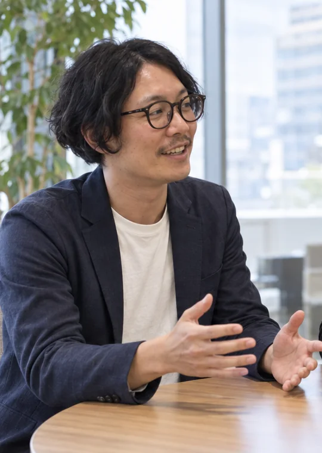
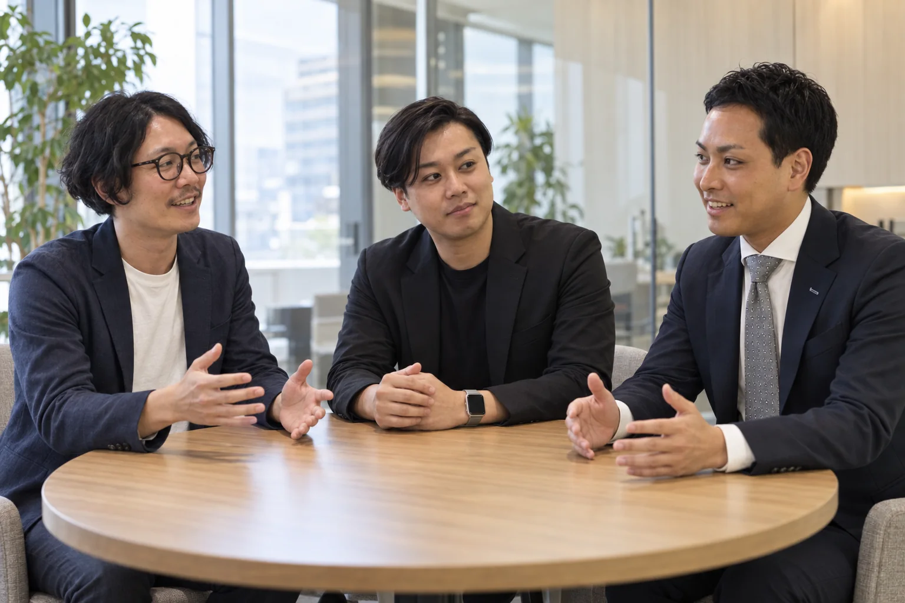
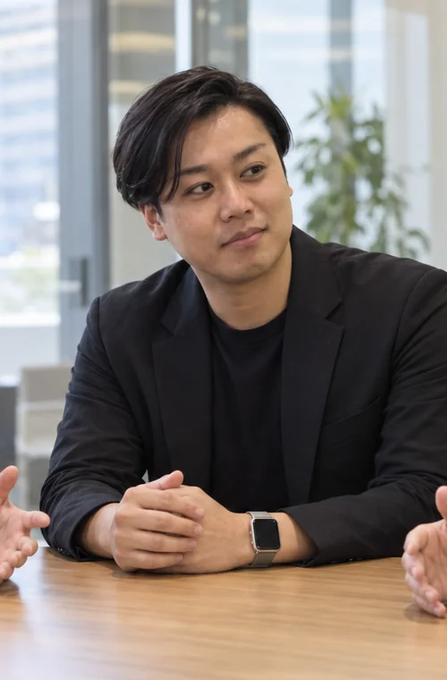

AI SaaS SALES
土屋 慧介
株式会社ライトアップ
AI SALES ROUNDTABLE ／ INTERVIEW
画面で見せるだけだったAIは、どうやって営業の経験を覚え、企画を一緒につくる存在になったのか。土屋・吉川・村田の3人が、約2年の変化を振り返ります。

僕の機能ではなく、僕と一緒に何を前へ進めるかが話されていた。
写真左から、土屋・吉川・村田

株式会社ライトアップ

株式会社ライトアップ

株式会社ライトアップ
STORY IN ONE MINUTE
商品を当てる道具だったAIが、営業の経験をつなぎ、売上につながる企画を一緒につくる「相棒」になっていました。
CHAPTER 01 ／ THEN & NOW
約2年前、AIはどんなふうに営業で使っていたんですか？
基本はライブでした。My GPTsなどを画面共有して、当日お客様から聞いた内容をそのまま入れる。事前に用意した答えを見せるのではなく、お客様と一緒に考えながら使っていました。
当時のAIは、目の前の相談と自社の商材を照らし合わせ、提案のピントを合わせる役。AIで何を解決できるのか、お客様も営業も一緒に探していた時期でした。
いまのAIと比べて、一番大きく変わったのはどこですか？
以前は一人ひとりが別々のAIを使っていて、みんなの提案が次に活かされませんでした。いまは商談ログや日々のミーティング、過去の提案がつながり、チーム全体の経験から答えをつくれます。
昨日5件相談して、良かったことも悪かったこともあった。その情報が翌日のAIには残っている。だから朝の打ち合わせでも、「その方向でいい」と言える提案が増えました。
昔のAIと今のAIは、Excelとスプレッドシートくらい違うのかもしれない。座談会で語られた比喩を編集
TWO YEARS OF CHANGE
CHAPTER 02 ／ SALES VALUE
誰でもAIを使える時代に、AI SaaS営業の価値はどこにありますか？
課題を見つけるだけ、既存商品へ当てるだけでは足りません。僕たちが提供できるのは、単なる自動化ではなく、それをどう売るかまで考えることです。
人がやるところとAIに任せるところを分け、より効果的に売上をつくる方法まで提案する。それが僕たちの価値だと思います。
では、AIにはどんな仕事を渡すべきなのでしょう？
いまある業務をAI化するより、自分がいまできていないことをAIにやらせる。そのほうが本質に近いのかもしれません。
深夜にお客様へ送るメールをつくる。顧客データを比べて、翌朝見るリストにする。日中は手が回らない仕事を夜のうちに進めてもらえば、朝の動きが変わります。
効率化だけならAIは「自分の代わり」で終わります。できなかったことを任せると、自分の時間と能力を広げる存在になります。
メール準備、顧客比較、リスト整理を伝える。
情報を調べ、比べ、たたき台をつくる。
確認し、直し、相手に合わせて決める。
CHAPTER 03 ／ HUMAN WORK
AIが働くようになったら、人は何をするのでしょう？
人が企画をつくるには、過去を思い出し、情報を探し、当てはめて構築する作業が必要でした。いまは、話しさえすれば、その多くをAIが進めてくれる。
だから人は、お客様の話を聞き、どこへ進むかを決めることに集中できます。
AIに何をさせるか。
その先に、AIがいるから自分は何をするかがある。
3人が案内しているのは、僕の機能ではなく、中小企業の社長が一人で抱え込まなくて済む働き方なのだと思います。少し照れるので、この感想はログに残さないでおきます。——もう残っていますが。
※ 本記事は2026年9月10日の座談会をもとに、言い直し・重複・音声認識上の誤変換を整理したものです。話者の切り替わりが不明瞭なため、回答は「AI SaaS営業チーム」として表示しています。タケル（AI）のコメントは編集上の演出です。